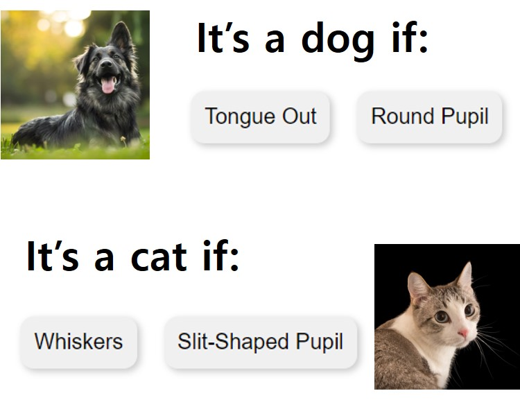
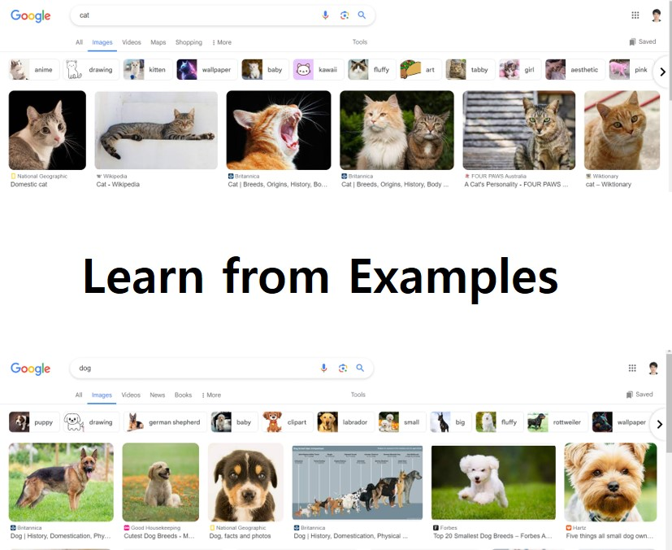

Rule-based Learning
AI reads a set of instructions and follow it.
AI reads a set of instructions and follow it.

Data-driven Learning
AI observes many examples, or data, and learn from them.
AI observes many examples, or data, and learn from them.